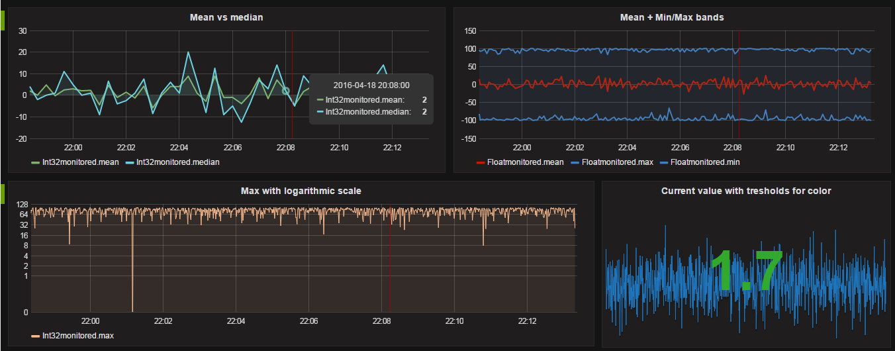

Building An Open Source Process Historian
April 18, 2016
This post will explain how and why I built a open source process historian.
Motivation
I have been working in the field of industrial automation, more specifically on MES systems, for nearly four years now. The reason I started exploring the possibilities of an open source alternative for the commercial process historians was to address some of the issues and frustrations I have with them.
One of those frustrations is that choosing a historian from one of the popular industrial vendors implies a serious vendor lock-in from the very beginning. For starting, they’re Windows only, meaning you are already tied to the Mircosoft ecosystem. Of course, Windows is not necessarily bad, but sometimes it is just not the right choice in the server space (even Microsoft itself is starting to realize this, see here and here). An ideal solution would be platform independent. Also, commercial historians usually integrate well with the respective visualization or MES solution of the same vendor, but not with other external software. This limits you to buying from the same vendor, even if a component from a different vendor is more fit-for-purpose. A good historian (and in general, any other software component) should have a simple, open API for other software to interface with.
Another issue is the visualization layer. Most of the solutions I’ve worked with are not very user-friendly, and require additional client software or specific Java versions to run their applet in a very outdated version of Internet Explorer. Ideally, the visualization should be both easy to work with, and require no dependencies on the client side.
Approach
When you go to the Wikipedia page for operational historian, the first sentence summarizes its main function:
Operational historian refers to a database software application that logs or historizes time-based process data.
But we already knew that. What’s interesting however, is that when you look closely at that summary, the only thing that makes it specific to industrial automation is the word “process”. So I dropped the “process” part and started looking for software that could fill in the functionality described by the other 14 words. You probably already guessed it, but people outside of the industrial world are also collecting and storing time-series data. Their interests are more in the fields of server monitoring and application analytics, but the principle is essentially the same. Even better, the scale they work at is even larger than what is typically required for most industrial companies. I’m talking tens of thousands of writes per second, which should be more than enough for competing with the current standards.
Storing the time-series data
One of those time-series databases is InfluxDB. The company behind it, InfluxData, is a YCombinator backed startup that has managed to produce a very mature product in a relatively short time, and it is already being used at major companies like ebay and Google. The database is extremely easy to set up, requires no external dependencies, has a SQL like query syntax and is fully open source. Furthermore, reading and writing data is done by means of HTTP requests, so you can very easily interface with it! All of these features combined make it a good fit for what I want to achieve.
To demonstrate how easy it is to install InfluxDB, I’ll take you through the installation procedure. First, get yourself a standard Ubuntu 14.04 LTS server (or similar). Then, tell the apt-get package manager where to look for InfluxDB by executing these commands:
$ curl -sL https://repos.influxdata.com/influxdb.key | sudo apt-key add -
$ source /etc/lsb-release
$ echo "deb https://repos.influxdata.com/${DISTRIB_ID,,} ${DISTRIB_CODENAME} stable" | sudo tee /etc/apt/sources.list.d/influxdb.list
Update the package list, install InfluxDB and start the service.
$ sudo apt-get update && sudo apt-get install influxdb
$ sudo service influxdb start
That’s it. It took less than a minute, which is peanuts compared to the time it usually takes to install – insert industrial software package here –. When you browse to http://yourServer:8083, you’ll see the influxDB admin page.
Visualizing data
InfluxDB has its own visualization tool, Chronograf, but after trying it I found that it currently lacks some features and it is not mature enough yet for a robust solution. Then I found Grafana, a large open-source project with the single purpose of providing an easy way of visualizing time-series data in a meaningful way. It provides you with a well thought-out web-based interface, different graph types and the possibility to create beautiful dashboards. It’s already close to 3.0, and after using it for a while I can only say it feels like a very mature product. Moreover, InfluxDB is supported as a datasource out of the box.
Installing and starting Grafana (v3.0 beta) also took less than a minute:
$ wget https://grafanarel.s3.amazonaws.com/builds/grafana_3.0.0-beta51460725904_amd64.deb
$ sudo apt-get install -y adduser libfontconfig
$ sudo dpkg -i grafana_3.0.0-beta51460725904_amd64.deb
$ sudo service grafana-server start
When you browse to http://yourServer:3000, you should see Grafana running. In the admin section, add InfluxDB as a datasource, and you’re good to go.
Collecting the data.
So, now we have a platform for storing and visualizing time-series data. This brings us to the point where we have to put the word “process” back in our functional description, because PLC’s don’t talk HTTP. PLC’s talk ProfiNET, Ethernet/IP, … Most of the time this is solved by installing an OPC server for each brand of PLC you want to talk to. If you have any experience with OPC, you probably know what a pain it is to get OPC working over a network (usually, it means hours of struggling with Windows DCOM settings). Fortunately, the new version of OPC, OPC Unified Access, is a lot easier to work with, and it is platform independent.
As there was no OPCUA-to-InfluxDB logger readily available, I decided to roll my own. Using an open source implementation of the OPC-UA stack in javascript (NodeOPCUA, another fantastic open source effort!), I wrote an application that polls or monitors a number of PLC values on one side, and writes them to InfluxDB on the other side. Also, when InfluxDB is temporarily unavailable, it buffers the data in a local database. You can find the code here. To get it up and running you must first install NodeJS, the server-side javascript platform:
$ curl https://raw.githubusercontent.com/creationix/nvm/v0.31.0/install.sh | bash
$ nvm install 5.10.1
Then, download and install the logger:
$ git clone https://github.com/coussej/node-opcua-logger.git
$ cd node-opcua-logger
$ npm install
Modify the config.toml file to your need, as specified in the instructions. You’ll have to point it to your OPC Server and your InfluxDB instance, and for each value you want to measure you must repeat the [[measurements]] section. Say you want to read the temperature of an equipment called “TANK42” from a Siemens PLC every 5 seconds, you’ll have to add this:
[[measurements]]
name = "temperature"
tags = { equipment = "TANK42" }
nodeId = "ns=3;s=PLC_TANKS.db103.16,r"
collectionType = "polled"
pollRate = 12 # samples / minute.
deadbandAbsolute = 0 # Absolute max difference for a value not to be collected
deadbandRelative = 0.0 # Relative max difference for a value not to be collected
Then, just start the logger:
node logger.js
If all goes well (and it should!), you will see your data appearing in InfluxDB.
Result
The company OPC Labs exposes a public OPC UA server with random data for testing purposes. I set up a test environment connected to this OPC server and managed to achieve a few thousand measurements per second (yes, second) without even stressing the systems. This was with both the OPCUA and InfluxDB on a remote machine, so I imagine local speeds being much higher. Using the data collected from this demo server, I created a grafana dashboard to demonstrate some of the possibilities Grafana provides for the visualization:

Not bad, eh?
I’m currently testing this on a production system for monitoring some values in a Siemens S7 PLC, using a Simatic NET v12 server. It’s been running for more then a month now without a single failure, so it looks very promising.
Downsides
If you’re not used to working in a UNIX-based environment, working with the command line might seem a little scary. It is, actually, but when you get the hang of it you’ll never want to go back. I love UNIX and Linux for it’s “Do one thing, and do it well” philosophy. However, if you don’t want to go there, you can install all of the above on a Windows box as well. Just be aware that my Ubuntu production box running this full stack is using only 400MB of RAM and 2,5 GB of diskspace. You can’t get Windows running on that.
Another possible downside is the file based configuration management, but I’m sure we can improve on that in the future.
Upsides
First of all, it’s free. Free as in freedom and free as in beer. The first kind of free means you can do whatever you want with it. Every part of the stack is open source and you can modify it to your liking, if that’s what you want. Also, each part is focussed on doing one thing: collecting data, storing data and visualizing data. If you want to switch one component for another (for example by using Chronograph instead of Grafana when it’s more mature), you are free to do so. The second kind of free (as in beer) means you don’t have to pay any money for it. Indeed, no licenses, neither for the OS nor the different software components. You can add as many measurements as you like at no extra cost. This, combined with the very easy installation, should lower the treshold for companies to try it out.
Another very important one: it’s open. If you want to gather data from some obscure system, you can write a small collector for it that pushes the data over HTTP to InfluxDB. You can write that little collector in any programming language you want (or even a shell script) because making an HTTP request can be done from almost anywhere. This allows you to interface with nearly everything, without being stuck in the toolset or programming language your vendor supplies an SDK for.
Finally, I think it’s all pretty slick. The easy installation (just a few commands) results in a reproducible environment. Both InfluxDB and Grafana leverage modern technologies that result in a nice end-user experience. Querying data is fast, dashboards can be easily created and shared within the company, and using the system requires nothing more than a recent browser.
Conclusion
I created this application and this post because I’d like to see the industrial software world approach things in a more open fashion. In the last few years, a lot of big companies have moved from closed, proprietary solutions to open, community-driven software. Even Microsoft has recently open-source the .NET framework, created an open development tool (Visual Studio Code) and is planning to bring SQL Server to Linux. I hope the big industrial vendors will follow this trend, because in my opinion, the current way of working is focussed on keeping customers locked-in and is holding back innovation.
I’d also like some like-minded people to try this for themselves, making adjustments and adding features as they go. Although my solution works for me, I’m sure that there is still plenty of room for improvement!
If you have any questions, suggestions, or you just want to get more information, don’t hesitate to drop me a line!